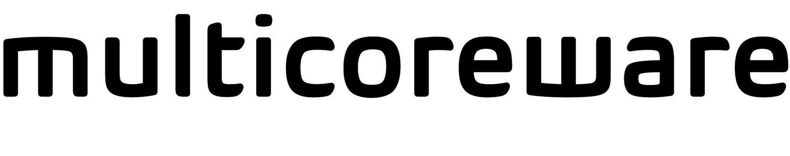

Interview Process
The recruitment process of Multicoreware has the following rounds:
1st: online MCQs
2nd – Written coding round (2 coding questions in 90 minutes)
3rd – Technical interview 1
4th – Technical interview 2
5th – HR ( Face to face or telephonic)
The questions for the written test focuses in both aptitude and coding so, the candidates must make sure that they are good at least in the basics.
The shortlisted candidates appear for the second round where they are prompted to solve two programming questions in 90 minutes.
Once the candidates clear the second round, they will have to attend two technical interviews and an HR interview.
Interview Experience
Round 1:
Round 1 was an MCQ exam.
The time allotted was 45 minutes and 30 questions had to be answered. There was negative marking for wrong answers(-1).
Out of 30 questions, I attempted 27.
MCQs were based on the following topics:
1.Aptitude (Quantitative)
2.DSA
3.OS
4.Computer Networks
Out of 99, 28 were selected for the next round.
Round 2:
This was a programming round.
We were given 4 questions that had to be solved in 1 hour. The coding questions were-
1.Matrix multiplication
2.Program to write linear convolution
3.A question based on graphs
4.Another question on the 2D array.
The problem statement is:
A room design takes input in the form of width, height, color1, color2 and fills the 2D grid such that first row alternates between
the pixels of color and with a period of . For each row that follows, the period shall be -.
Note that always begins the row.
I could solve 3 questions. 13 out of 28 were shortlisted for interviews.
Round 3:
There were three rounds of interviews, 2 technical and 1 HR.
Technical Interview 1:
The interview started with the interviewer introducing herself. She asked me to do the same. She asked me about one of my projects.
1.I was asked questions on DSA.
2.How are linked lists different from arrays?
3.What is the difference between stack and queue?
4.Discussion on asymptotic notations.
5.Then she told me an algorithm and asked me to find its time complexity. It was a binary search, just a bit twisted.
Two coding questions:
1.Find the Missing Number.
2.Move all zeroes to the end of the array.
Technical Interview 2:
This round mainly focussed on OS,8051 and DSA.
1.I was asked about multithreading, multiprogramming, and cache.
2.Why is multiprogramming needed?
3.What is process synchronisation? How is it achieved?
4.I had mentioned a project in 8051 in my resume.
5.Few questions related to 8051 architecture was asked.
6.Questions on 8051 addressing modes.
7.Was asked to write a few 8051 commands.
8.What is DA A?
9.We then moved to DSA.
10.I was asked to explain BFS.
11.Write a code to insert an element in a linked list.
HR Round:
This round started with the interviewer asking me about my performance in the previous interviews.
I was asked to explain my projects.
Were you able to get the desired results?
Where do you stay currently?
Are you comfortable relocating?